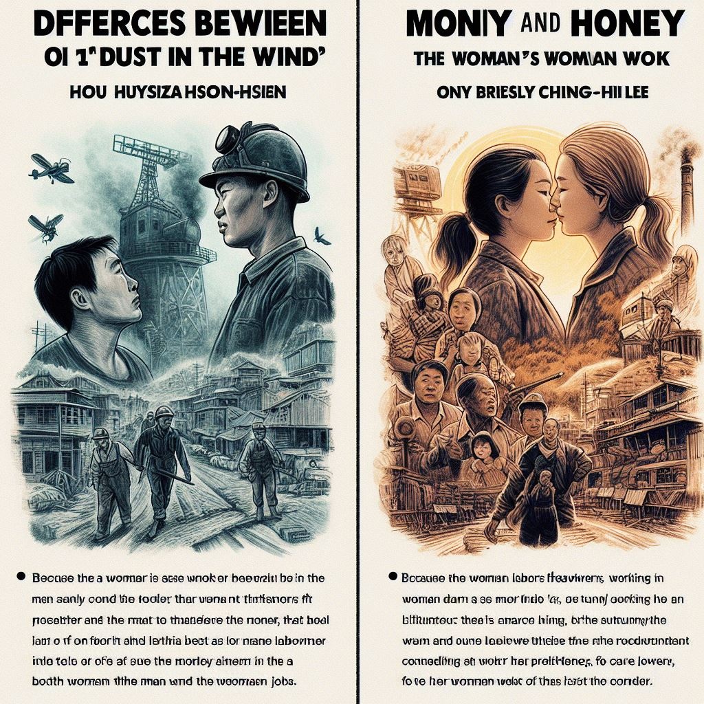

Hsiao-hsien centers on the men's jobs: working in the mine, and going to the military, only briefly, showcasing the women’s jobs. More importantly, the director underscores that both the man and the woman work. Whereas in "Money and Honey", the documentary primarily focuses on the woman’s job as a caretaker. Because the woman laborers are the main 'breadwinners', they become caretakers of others instead of their children to provide for their children’s education back in their home country (Zhang 203-204).
